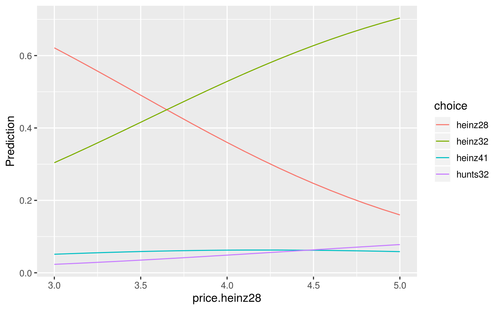

Plot method for rforest.predict function
# S3 method for rforest.predict plot(x, xvar = "", facet_row = ".", facet_col = ".", color = "none", ...)
| x | Return value from predict function predict.rforest |
|---|---|
| xvar | Variable to display along the X-axis of the plot |
| facet_row | Create vertically arranged subplots for each level of the selected factor variable |
| facet_col | Create horizontally arranged subplots for each level of the selected factor variable |
| color | Adds color to a scatter plot to generate a heat map. For a line plot one line is created for each group and each is assigned a different color |
| ... | further arguments passed to or from other methods |
predict.mnl to generate predictions
result <- mnl( ketchup, rvar = "choice", evar = c("price.heinz28", "price.heinz32", "price.heinz41", "price.hunts32"), lev = "heinz28" )#> Warning: NaNs producedpred <- predict(result, pred_cmd = "price.heinz28 = seq(3, 5, 0.1)") plot(pred, xvar = "price.heinz28")